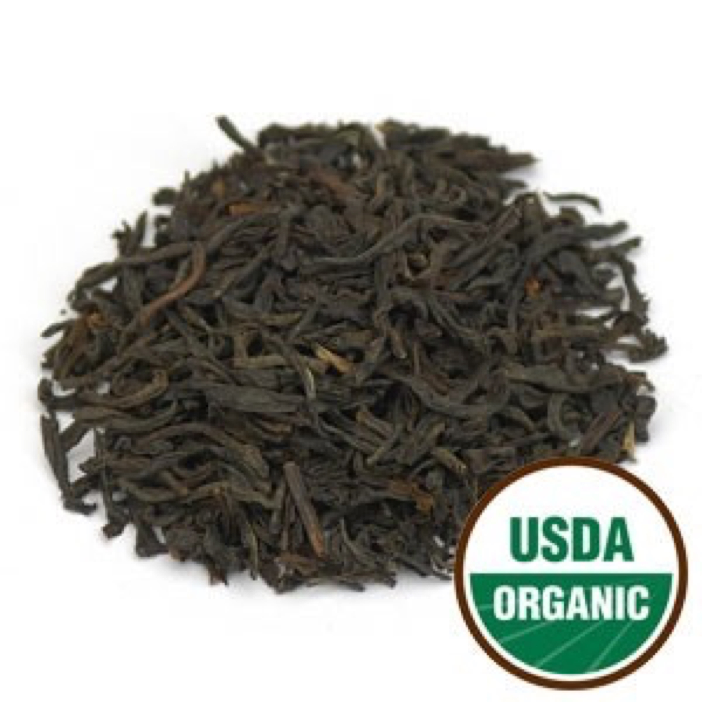

An Organic Assam Black Tea from the mountains of southern India. T.G.F.O.P. is a very high grade tea, containing many lighter golden tan tips of the tea adding to the depth of taste. This tea has a full-bodied, rich malty flavor and makes a delicious breakfast tea. Milk and sugar complement this tea well. Tippy Golden Flowery Orange Pekoe (T.G.F.O.P.) is FOP with a larger amount of tips. When these tips are in abundance, the terms 'Tippy and Golden' are attached to FOP, thus making it Tippy Golden Flowery Orange Pekoe. TGFOP is the top grade of OP tea. Daily serving size: Pour 8 oz of simmering water (185-195° F preferred) over 1 tsp. of tea. Steep 3-4 minutes.
